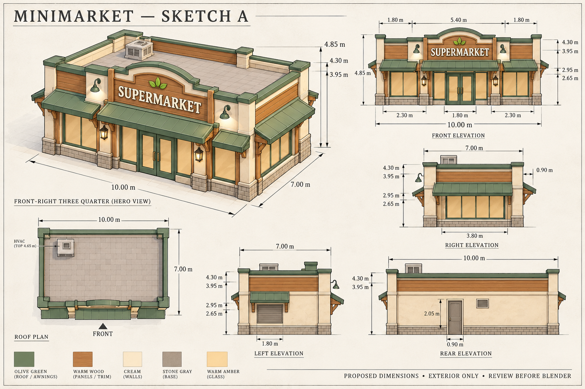

Minimarket — Sketch A
ACC 14 Oktober 2026 · model Blender: ArtSource/MiniMarket_A · 2.910 triangle · 1 material atlas
Badan 10 × 7 m · parapet 4,30 m · crest papan nama 4,85 m. Atap datar, kanopi hijau zaitun, pilar krem, panel kayu, kaca amber dan satu HVAC atap.

Depan, kanan, belakang, kiri, perspektif dan roof plan. Sisi tersembunyi merupakan usulan. Ukuran utama mengikuti spesifikasi tertulis; 1,80 m di tampak kiri adalah lebar kanopi kecil, shutter tetap 1 × 1 m.
Atlas yang tersedia
TFP_Atlas_1A sudah diperiksa ulang. Warna mendekati referensi tersedia; panel, batu, kisi HVAC, huruf dan logo dibuat dari geometri. Tidak membutuhkan atlas baru untuk lingkup exterior.
Data pixel / UV dan hash atlas · Prompt image_gen
Lingkup bangunan
Exterior termasuk pintu terpisah, kanopi, parapet, lampu permanen, papan nama dan HVAC. Tanaman, planter, paving, peti buah, dagangan dan interior tidak termasuk. Kaca diusulkan opaque amber.
Gambar referensi pengguna